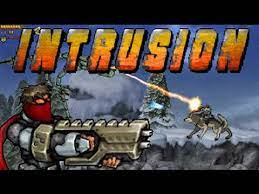

Falando Sobre os sete jogos
Power Pamplona

Seu objetivo é correr o mais rápido possível para escapar de um touro furioso que pretende acabar com sua vida. Mas a sua missão não será tão fácil assim! Você deve superar todos os obstáculos pelo caminho pulando-os com agilidade. Tome cuidado para não perder a velocidade de seu personagem ficando frente a frente da fúria do touro. Power Pamplona também é conhecido como Extreme Pamplona e você deve sobreviver na festa de São Firmino! Este jogo foi desenvolvido pela marca Rexona inicialmente estava disponível apenas em Flash, agora em HTML5.
Fireboy and Water girl

Fireboy and Watergirl: Elements é um jogo de plataforma, no qual você terá que acompanhar os dois personagens por dentro deste templo, passando por desafios e missões fantásticas, utilizando suas habilidades especiais para ultrapassar obstáculos.
Intrusion
Sua nave parou em um planeta desconhecido. Agora você precisa enfrentar os desafios desse planeta e descobrir uma maneira de voltar para a Terra. Complete 5 níveis armado até os dentes. Entre em fábricas e trens, eliminando todos os soldados e robôs que encontre no seu caminho.
3 Pandas
Ajude os pandas a escaparem desta prisão. Eles estão sendo levados para um zoológico e precisam se salvar. Interaja com os detalhes de cada cenário e com os pandas para descobrir como escapar. Use o seu raciocínio, pois nem sempre será fácil encontrar a saída.
Skyforce Kitty

Lidere seu intrépido bando de amigos felinos do castelo cercado e recupere as terras do rei! Atualize com chapéus, roupas e armas para derrotar todos
Zombotron
Zombotron é um jogo em flash que se passa em um planeta de mesmo nome, habitado por humanos-zumbis (ou como a própria descrição define: zumbis estúpidos). Você entra na pele de um heróis que deverá exterminar os zumbis-robôs do planeta.
Zombotron 2

O objetivo deste jogo é matar. Defenda-se do grupo de zumbis que querem pegar sua cabeça. Aperte a tecla de espaço a qualquer momento para comprar armas novas. Toda a população se tornou zumbi e você só pode matá-los.